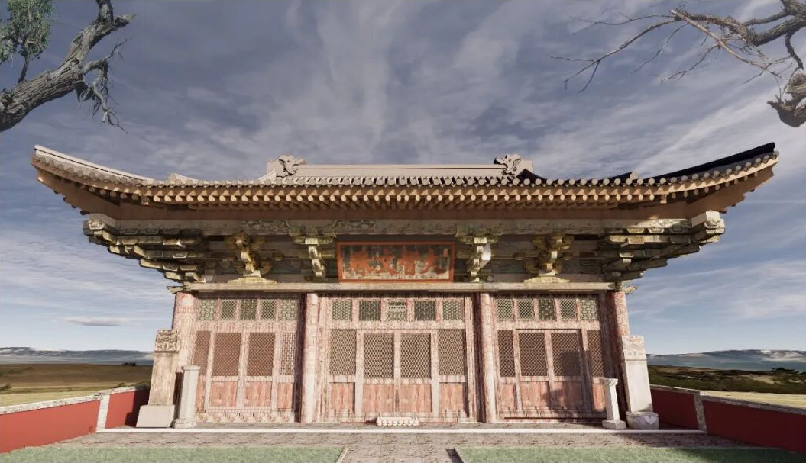
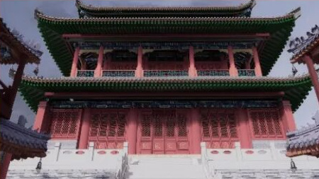
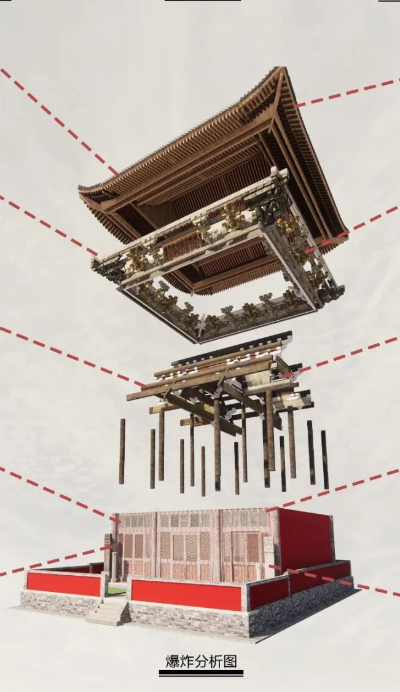
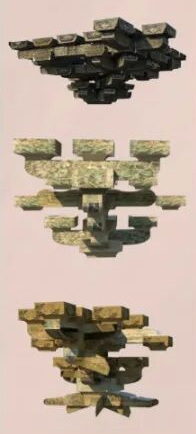

ARCHITECTURAL SURVEY & DIGITAL RECONSTRUCTION · 2021
Daci Pavilion &
Geyuan Temple.
大慈阁 · 阁院寺
Reading a building
through its details.
Wenshu Hall.
阁院寺 · 文殊殿
A frame beneath the roof.
Drag to turn. Select a layer to see how the building comes together.
拖动旋转，滚轮缩放。点选构件查看。
Mouse / touch. Camera off.
About this interactive model ＋
This browser model is a new proportional study built from our survey boards. It is separate from the original CAD / Rhino reconstruction. The roof, frame and bracket assemblies follow the visible drawings; concealed joints and precise member profiles are not verified. Particle and hand controls are new presentation experiments.
网页模型依据测绘展板重建比例与可见构件关系；尚未导入原始 CAD / Rhino 文件。斗拱为构造关系示意，不代表精确榫卯复原。
Hand mode loads MediaPipe on demand and processes camera frames in your browser. No camera frames are uploaded. Pinch thumb and index finger, then move your hand to turn the model; release to reposition. Two pinched hands move apart to separate layers.
THE ORIGINAL PROJECT
Survey &
reconstruction.
A survey of two very different timber buildings, from the outline of a roof to the pattern in a window.
I worked with the survey and reconstruction team on Daci Pavilion and Geyuan Temple. My contribution included architectural documentation in CAD and Rhino, and modelling traditional bracket structures.
The survey boards bring field photographs, plans, sections and reconstruction views together. They are the starting point for this interactive presentation.
- WHEN
- October 2021
- MY WORK
- Architectural survey, CAD / Rhino documentation and 3D bracket modelling, as part of the team.
- CONTEXT
- Hebei University
Daci Pavilion, Baoding · Geyuan Temple, Laiyuan


READING THE TIMBER
Inside the
wooden frame.

From the eaves
to the columns.
Under the broad eaves, layers of projecting timber arms and bearing blocks connect the roof assembly to the frame. Separating these layers makes their relationship easier to read.

GEYUAN TEMPLE / WINDOW STUDY
Light through
a wooden lattice.
The survey records six window pattern groups. Follow the crossing laths, open a repeated motif, and move the light to see its shadow.
选择纹样，查看木条交织；移动光线，观察投影。